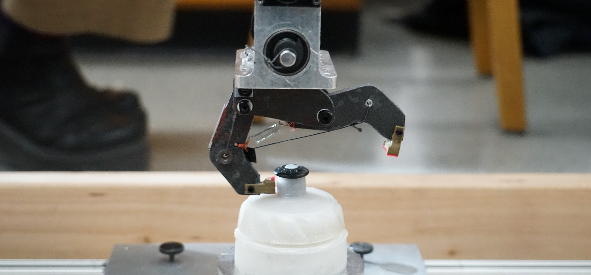
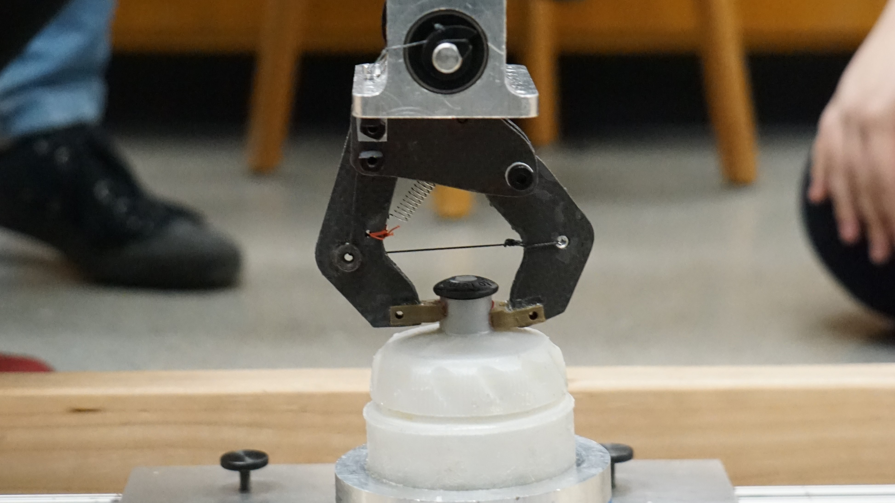

Design 1 Gripper Project
Objective
The objective of this project was to design and build an actuated gripper powered by a single motor which can grab a water bottle top with a weighted metal bottom. Our gripping mechanism must attach to the bottom of the provided motor assembly and derive power from the output shaft depicted on the right. Once the object is firmly grasped by the gripper, the whole assembly is released from a 90 degree angle and allowed to swing for a period of time. Afterwards, the object’s position relative to its starting position is measured. If the object has displaced more than 0.1 inches in any direction the gripper would fail the test. Grippers that passed the testing were ranked based on lightest mass.
In addition to the basic criteria for passing the test, there were 3 major constraints placed on our design:
- When the gripper is closed around the object it must fit within a 7 inch sided cube starting from the base of the motor assembly. Attachments from the motor output shaft to the gripper are allowed to be outside the box.
- The gripper must close when the motor is continuously run in one direction and remain open when the motor is continuously run in the opposite direction.
- When attached to the motor assembly, the gripper must be able to swing into gripping position without touching the object.
Teammates
- Kevin O'Neill
- Alexander Baikovitz
- Andrew Rosenfeld
- Jack Sather
The Design Process
When we began our initial brainstorming we determined that actuating our gripper using string rather than gears would be the optimal solution. We believed that gears would involve more mass than string as, in addition to gears being inherently heavier than string, gears would involve the addition of an extra axel and bearing set up which would add unnecessary mass. The extra mass of gears was deemed disproportionally beneficial as we could achieve the geared up torque of the gears with the string by pulling on the gripper arm further away from the pivot point.
Because sting could only pull the gripper closed we would need to spring load the arms open. In order to minimize both complexity and mass we then decided to use a two arm gripper with only one actuated arm. We planned that the arms would be aligned with the dynamic motion to allow them to better resist bending moments.
We knew that our end goal was to use foam sandwiched with carbon fiber as our final gripper material; however, we used Delrin for our first design review. The main purpose of this was to ensure that we would have one of our tests pass so that we could risk more on the second test. Secondly, we wanted to determine any flaws in our initial design before we moved onto the carbon fiber sandwich as it was more expensive than the Delrin. Therefore, we could essentially use the Delrin as a prototyping material before moving onto the carbon fiber. Finally, we waited to use carbon fiber until the last test as we wanted to ensure that other groups would not be able to easily replicate our final design which we hoped to optimize to be the lightest.
Manufacturing

This project involved a variety of manufacturing techniques from laser-cutters to CNC mills. For the Delrin version of the arms we were able to use a standard CNC mill; however, as machining carbon fiber poses a health hazard, we had to find specialized machines on campus that had safeguards to mitigate the risks. Machining the arms in this way allowed us to create more complex geometries that were better able to handle the loads expected during testing while removing all unnecessary mass. When the carbon fiber sandwich arms were machined we noticed that they were very weak in off axis loading so we added two part epoxy along the edges of the parts which drastically increased their rigidity.
Design Review 1

Our gripper for the first design review was highly unoptimized and featured a heavy resin 3-D printed spool and Delrin arms. This spool was key to the operation of our gripper as it contained two channels for string so that we could use one to actuate the gripper and the other as a hard stop to prevent rewinding when the motor was run in reverse. As the spool increased the radius of the output shaft, we needed to add loops in the string between the two arms to act as pully to allow us to maximize our grip strength.
Our first design review gripper weighed 134 grams which was about 60 grams heavier than the lightest gripper from this round of tests.
After reflecting on our performance we determined that the fundamental design was sound; however, we would need to switch to carbon fiber and make some minor changes to ensure we had the lightest gripper.
Final Design Review
For our final design we had replaced the 87 grams of Delrin with about 12 grams of carbon fiber sandwiching foam. Additionally, we came up with an elegant solution to the 16 gram 3D printed spool in the form of a simple lasercut Delrin piece weighing 0.69 grams which acted as a one way rachet so that an additional hard stop was no longer needed. Additionally, we reduced the amount of hardware where possible and replaced all metal hardware with nylon replacements to further reduce mass.
When we switched to the carbon fiber we realized that the previous, more direct string path, placed unnecessary bending load in the direction the carbon fiber and foam sandwich was weak to so we manufactured a spacer that would allow us to pass though the base and place the arm in compression rather than bending.
These changes allowed us to create a gripper which only weighed 23.4 grams. This was a significant achievement as the class average was 150 grams and the next lightest gripper was 40 grams.